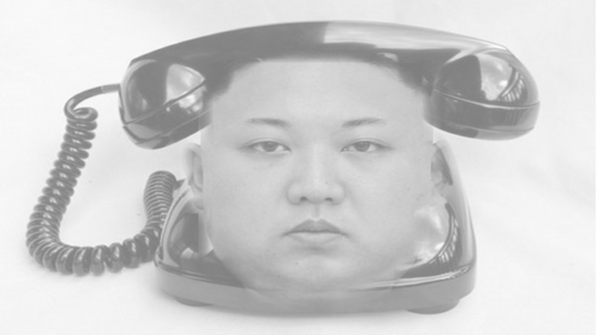

- C#の Windowsフォームアプリケーション(.NET Framework) で作成
- コードをコピペ
using System;
using System.Drawing;
using System.Drawing.Imaging;
using System.IO;
using System.Windows.Forms;
namespace RGBtoRGBA //ここを変える.
{
public partial class Form1 : Form
{
public Form1()
{
InitializeComponent();
RGBtoARGB("Q1A.jpg", 1, Color.Black,false);
GrayPic("img1.png", "img2.png");
}
public void GrayPic(string source, string source2)
{
Bitmap source_b = new Bitmap(source);
Bitmap source2_b = new Bitmap(new Bitmap(source2),new Size(source_b.Width,source_b.Height));
Rectangle rect = new Rectangle(0, 0, source_b.Width, source_b.Height);
BitmapData source_data = source_b.LockBits(rect, ImageLockMode.ReadWrite, PixelFormat.Format32bppArgb);
BitmapData source2_data = source2_b.LockBits(rect, ImageLockMode.ReadWrite, PixelFormat.Format32bppArgb);
try
{
Bitmap canvas = new Bitmap(source_data.Width, source_data.Height);
byte[] imgdata = new byte[source_data.Stride * source_data.Height];
byte[] imgdata2 = new byte[source2_data.Stride * source2_data.Height];
System.Runtime.InteropServices.Marshal.Copy(source_data.Scan0, imgdata, 0, imgdata.Length);
System.Runtime.InteropServices.Marshal.Copy(source2_data.Scan0, imgdata2, 0, imgdata2.Length);
int argb;
for (int y = 0; y < source_data.Height; ++y)
{
for (int x = 0; x < source_data.Width; ++x)
{
argb = 0;
byte[] gray = { 0, 0 };
int pos = y * source_data.Stride + x * 4; //Format32bppArgbは1ピクセル4バイト
gray[0] = (byte)((imgdata[pos] + imgdata[pos + 1] + imgdata[pos + 2]) / 6.0);
gray[1] = (byte)((imgdata2[pos] + imgdata2[pos + 1] + imgdata2[pos + 2]) / 6.0);
gray[1] += 127;
double alpha = 1 - Math.Abs(gray[0] - gray[1]) / 255.0;
for (int i = 0;i < 3; ++i)
{
argb += (byte)(gray[0] / alpha) << (8 * i);
}
argb += (byte)(alpha * 255) << 24;
canvas.SetPixel(x, y, Color.FromArgb(argb));
}
}
canvas.Save(AppDomain.CurrentDomain.BaseDirectory + Path.GetFileNameWithoutExtension(source) + "x" + Path.GetFileNameWithoutExtension(source2) + ".png", System.Drawing.Imaging.ImageFormat.Png);
}
finally
{
source_b.UnlockBits(source_data);
}
source_b.Dispose();
}
}
}

ダウンロードしていろんなアプリケーションで開いてみよう！
また、色んな人に各自で画像を開いてもらおう！
上から計算していく
\(R_1,G_1,B_1\)...１枚目の画像のRGB値(0~255)
\(R_2,G_2,B_2\)...２枚目の画像のRGB値(0~255)
\(A_3,R_3,G_3,B_3\)...出力画像のARGB値(0~255)
\(X,Y\)...一時的な変数
\(X=\frac{R_1+G_1+B_1}{6}\)
\(Y=\frac{R_2+G_2+B_2}{6}\)
\(A_3=128+X-Y\)
\(R_3=G_3=B_3=\frac{255X}{A_3}\)
※\(A_3\)が0より大きくなるように、\(\frac{255X}{A_3}\)が255を超えないように計算式を調整しているので、場合分けの必要なし
※プログラムで計算してる式は若干違いますが、計算内容、結果は全く同じです